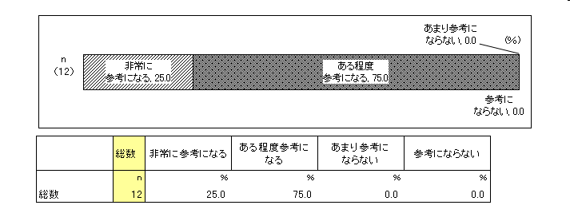
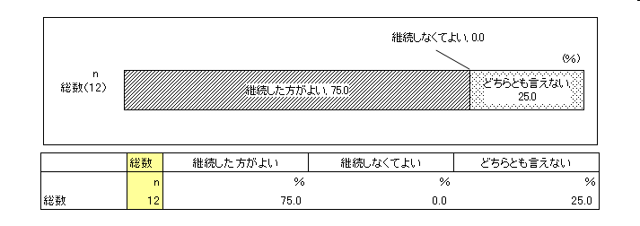
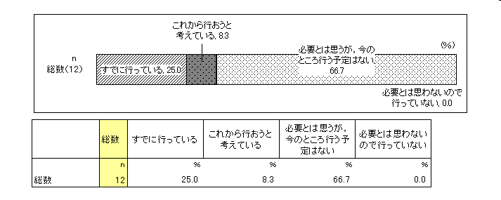
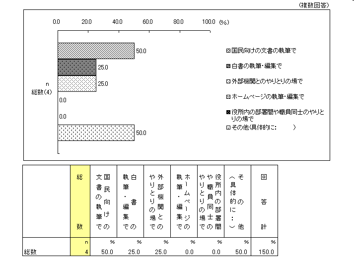
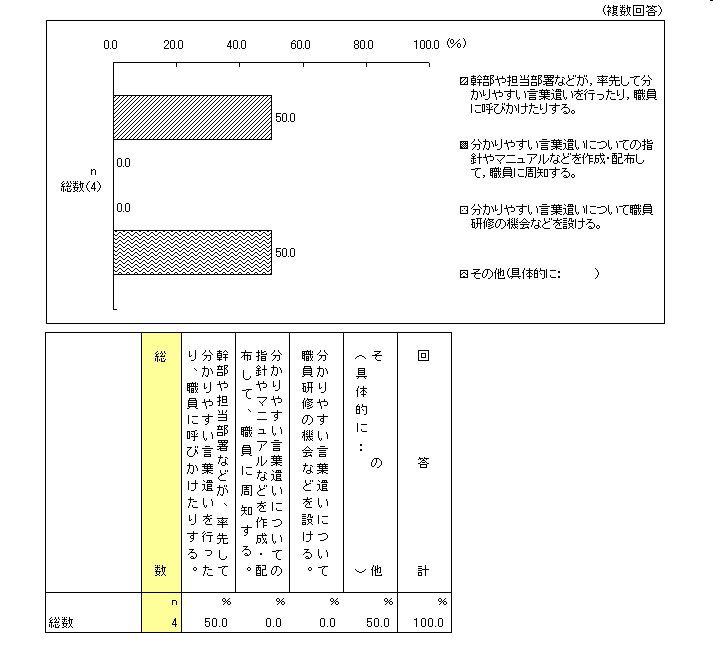
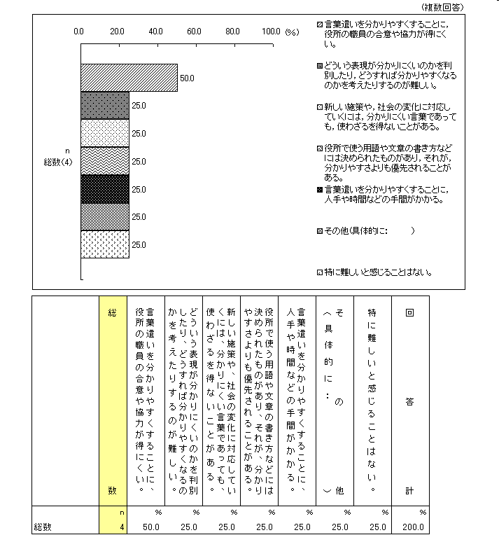
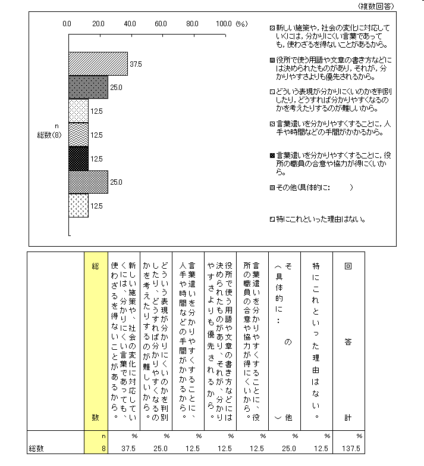

「外来語」言い換え提案：アンケート
「外来語」言い換え提案
国立国語研究所
「外来語」言い換え提案
アンケート
国立国語研究所「外来語」委員会
省庁アンケート（平成18年4月） アンケート内容
「外来語」言い換え提案に対する意識 （問１，２）
（問１）国立国語研究所の「『外来語』言い換え提案」は，貴自治体にとって参考になりますか。

（問２）国立国語研究所の「『外来語』言い換え提案」は，今後も継続した方がよいとお考えですか。

「外来語」言い換え提案のような試みの実施状況 （問３～７）
（問３）貴自治体では，外来語の言い換えなど，言葉遣いを分かりやすくする試みを，組織的に行っていますか。

（問４）上の（問３）で，「すでに行っている」「これから行おうと考えている」とお答えの方にお尋ねします。外来語の言い換えなどの，言葉遣いを分かりやすくする試みは，具体的にどのような場で行っていますか，あるいは，行おうと考えていますか。次の選択肢の中から，幾つでも○を付けてください。

- その他の回答
- (1)法令案審査 (2)答弁書審査
- 本省の作成する文書全般について
（問５）上の（問３）で，「すでに行っている」「これから行おうと考えている」とお答えの方にお尋ねします。外来語の言い換えなどの，言葉遣いを分かりやすくする方法として，具体的にどのようなことをしていますか，またしようとしていますか。次の選択肢の中から，幾つでも○を付けてください。

- その他の回答
- 「『外来語』言い換え提案」を局内に供覧し、周知を図ることはもとより、国会議員が提出する質問主意書に対する答弁書を審査する過程においては、同冊子を活用し、安易に外来語を用いないこととしている。
- 本省局部課及び所管各庁への通知
（問６）上の（問３）で，「すでに行っている」「これから行おうと考えている」とお答えの方にお尋ねします。外来語の言い換えなどの，言葉遣いを分かりやすくするとき，またそれを試みようするとき，難しいと感じることがありますか。また，それはどんな難しさですか。次の選択肢の中から，幾つでも○を付けてください。

（問７）上の（問３）で，「必要とは思うが，今のところ行う予定はない」とお答えの方にお尋ねします。行う予定がないのはどうしてですか。その理由にあたるものを，次の選択肢の中から幾つでも○を付けてください。

- その他の回答
- 当庁においては、公文書の表記において、外来語の使用頻度が少なく、その言い換えについて、緊近の課題となっていないから。
- 必要に応じて「外来語言い換え提案」を使えばよい。
「外来語」言い換え提案，国語研究所に対する意見・要望 （問８）
- 今後も続けていただきたい。
- 「言い換え提案」については、政府全体を通じ、ある程度、強制力のあるものとすれば、実施しやすいと考えます。
- １．この言い換えをどのように国民に広めていくかが課題だと思います。特に対象は「マスコミ」と「役人」でしょう。この２つに何か有効な対策があればいいのですが。２．国民向けには、市販の国語辞書に（うしろのページにでも）付録としてこの言い換え表を載せてもらえないでしょうか。「広辞苑」にのれば、効果は大きいと思います。
ページの先頭へ
本ページに関するお問い合わせはこちらへ
© 国立国語研究所 / リンクと複製について
最終更新日： 2006-08-31 (木) 11:09:36